Sam va débarquer et va balancer tout ce sur quoi j'ai travaillé ces derniers jours. Je vais tout balancer d'un coup, comme d'habitude, sous forme de série. Voici tout ce que le Dev Day a couvert aujourd'hui. Numéro un : Dots. Un assistant IA qui ne s'éteint jamais. Un Dot vit à l'intérieur de ChatGPT, dispose de sa propre machine virtuelle dans le cloud et se connecte à plus de 4 000 applications. Il continue de travailler en arrière-plan même après la fermeture de l'onglet et il apprend de vos retours pour s'améliorer chaque semaine.
Interface & Outils : Présentation de conférence, interface de chat d'assistant IA.
Contenu textuel & Code : Titre « dots », personnages colorés représentant des assistants IA, interface de discussion avec l'assistant Alfred.
Action / Démonstration : Présentation des nouveautés du Dev Day concernant les assistants IA persistants.
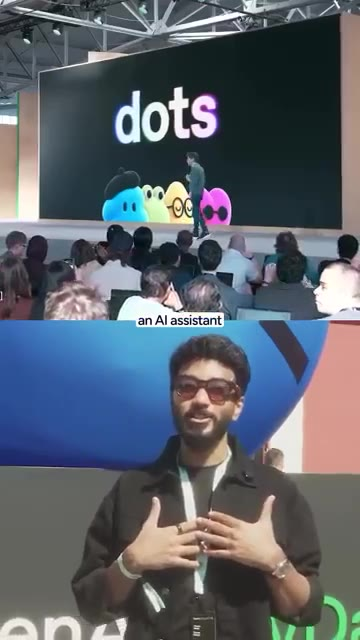
🔍 Agrandir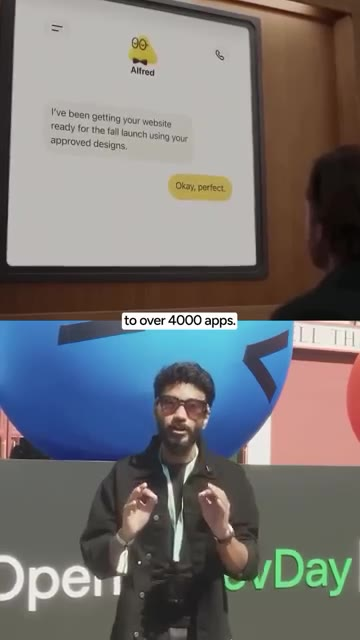
🔍 AgrandirLe premier point est offert avec les versions Pro et Business Premium. Numéro deux, GPT 6.1 Sol. Presque aussi intelligent que GPT 6 Astra, le meilleur modèle d'OpenAI, mais à un cinquième du prix. Seulement 2 dollars pour un million de jetons d'entrée. Les jetons sont de petits morceaux de texte que l'IA lit. Il est conçu pour la programmation, l'utilisation d'ordinateurs et le travail de bureau. Numéro trois, le niveau ultra-rapide. La vitesse est désormais une option payante. Jusqu'à huit fois plus rapide dans Codex, environ 300 jetons par seconde.
Interface & Outils : Présentation sur grand écran / Diapositive de conférence avec tableau comparatif des prix des modèles d'IA.
Contenu textuel & Code : Texte "GPT-6.1 Sol" et tableau de tarification comparant GPT-6.1 Sol et GPT-6 Astra (Input, Cached input, Output).
Action / Démonstration : Présentation des spécifications et des tarifs des nouveaux modèles d'intelligence artificielle sur scène.
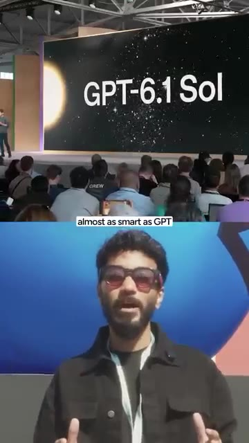
🔍 Agrandir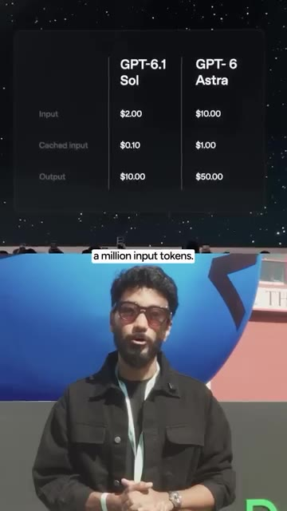
🔍 AgrandirJusqu'à six fois plus rapide dans l'API. Le piège ? Cela coûte six fois plus cher. Numéro quatre, l'API des agents avec l'utilisation de l'ordinateur. Les développeurs peuvent désormais créer des agents qui se souviennent, utilisent des outils et font équipe avec d'autres agents. OpenAI héberge le tout et grâce à l'utilisation de l'ordinateur, l'agent clique, tape et fait défiler du contenu dans les logiciels exactement comme un humain. Numéro cinq, l'espace ChatGPT. Un espace partagé pour votre équipe. Tout le monde y dépose des fichiers et du contexte.
Interface & Outils : Navigateur web, interface de jeu Astra Adventures sur localhost:5174
Contenu textuel & Code : Jeu spatial interactif avec indicateurs de vitesse et de pilotage automatique (Auto Pilot Activated)
Action / Démonstration : Démonstration d'un agent utilisant l'ordinateur pour interagir avec un jeu en temps réel.
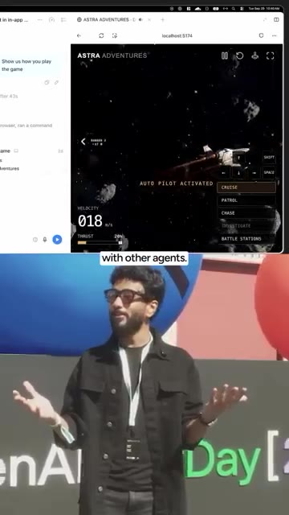
🔍 AgrandirLe point de chaque coéquipier lit la même connaissance de projet et Pages permet aux humains et à l'IA de modifier un même document ensemble. Numéro six, se connecter avec ChatGPT. Se connecter à d'autres applications avec votre compte ChatGPT. 16 partenaires au lancement, incluant Notion, Vercel et Devin. L'IA que vous utilisez à l'intérieur de celles-ci peut provenir de votre forfait ChatGPT. Numéro sept, des points spécialistes. Pour les entreprises, chaque point obtient un travail, comme donner à chaque équipe sa propre IA employée. Et OpenAI prévoit de les gérer via Agent 365 de Microsoft, les mêmes outils de sécurité que les grandes entreprises utilisent déjà. Numéro huit, des agents gérés par Bedrock. OpenAI
Interface & Outils : Interface de présentation sur grand écran et application ChatGPT.
Contenu textuel & Code : Texte de transcription de réunion ou de notes affiché sur l'écran de la conférence. [DESC_IMAGE_2] Présentation des fonctionnalités de ChatGPT sur écran géant devant un public.
Action / Démonstration : Explications face caméra et présentation conceptuelle.
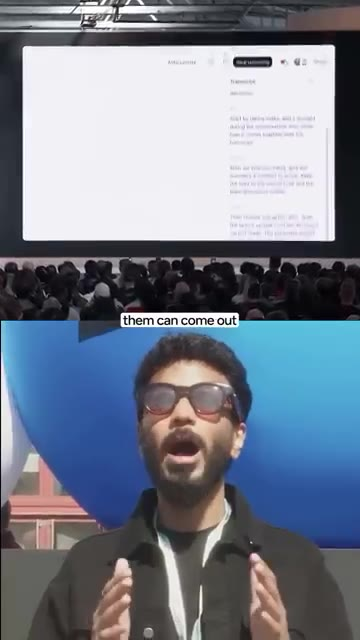
🔍 Agrandirles agents s'exécutent désormais directement dans le cloud d'Amazon, AWS. Oui, l'entreprise que Microsoft a soutenue à coups de milliards vient de s'installer chez Amazon. Numéro neuf, les extensions de plugins et les événements MCP. Les plugins peuvent désormais ouvrir des panneaux latéraux et des visionneuses de fichiers directement dans ChatGPT. Et le MCP, le connecteur qui relie l'IA à vos applications, peut désormais déclencher des automatisations de lui-même. Numéro dix, l'API de décision, propulsée par Luna. Vous lui donnez une liste fixe de réponses et elle choisit la bonne instantanément. Pensez au tri de tickets de support en temps réel. Numéro onze, l'intelligence privée. Rétention de données zéro. OpenAI ne conserve pas vos données et la sécurité
Interface & Outils : Écran de conférence affichant une application web / interface SaaS (Evergreen) et un comparateur de vols.
Contenu textuel & Code : Tableau de bord utilisateur 'Evergreen', calendrier, statistiques d'équipe et interface de recherche de vols ('Find a one-way, nonstop flight...').
Action / Démonstration : Présentation sur scène avec projection sur grand écran montrant l'intégration d'applications et de fonctionnalités logicielles.
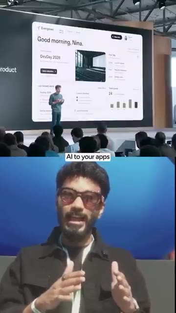
🔍 Agrandir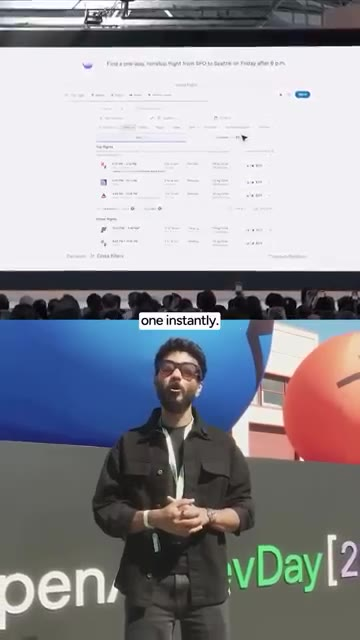
🔍 Agrandirles vérifications s'exécutent automatiquement sans qu'aucun employé d'OpenAI ne les voie. Numéro 12, Pro500. Un nouveau forfait à 500 dollars qui coûte plus de 40 000 roupies par mois. 25 fois l'utilisation du forfait Plus et une vitesse ultra-rapide. Mais voici la partie dont personne ne parle. Le forfait Pro à 200 dollars est à nouveau ouvert. Sauf que les nouveaux utilisateurs obtiennent la moitié de l'utilisation qu'avaient les anciens utilisateurs.
Interface & Outils : Capture d'article de presse et écran de présentation événementielle.
Contenu textuel & Code : Texte sur l'abonnement Pro 500 et article de presse mentionnant le forfait à 500$.
Action / Démonstration : Présentation des détails et caractéristiques du nouveau forfait tarifaire d'OpenAI.
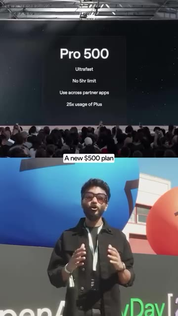
🔍 Agrandir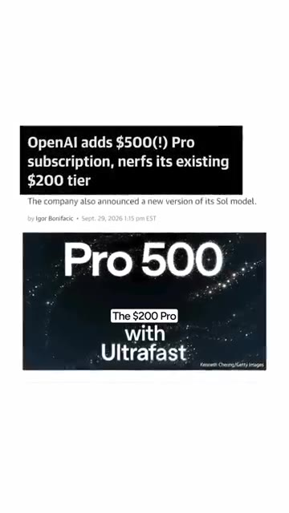
🔍 AgrandirEt un bonus, toute l'API vient de devenir plus rapide. Les premières réponses arrivent 45 % plus vite et les appels d'outils s'exécutent plus de 30 % plus rapidement. OpenAI ne vend plus un chatbot. Elle vend des employés IA. Lequel essayez-vous en premier ? Commentez le chiffre. La liste complète avec les liens est dans ma communauté WhatsApp gratuite. Lien dans la bio.
Interface & Outils : Document texte explicatif.
Contenu textuel & Code : Texte rapportant une réduction de 45% du temps de l'API OpenAI et plus de 30% d'appels d'outils plus rapides.
Action / Démonstration : Affichage des statistiques de performance de l'API OpenAI.
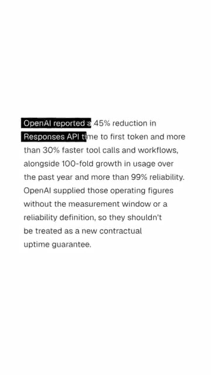
🔍 Agrandir